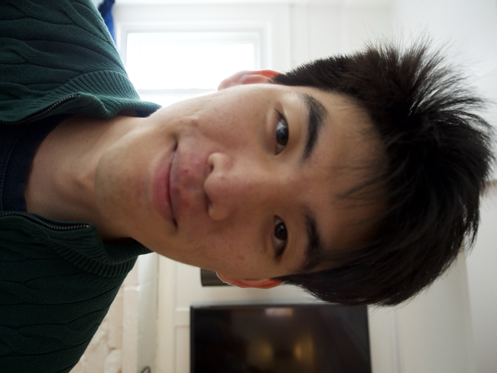
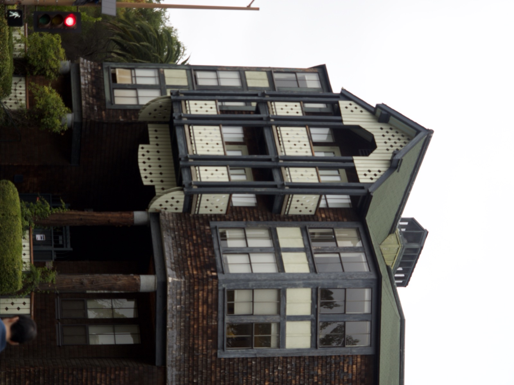
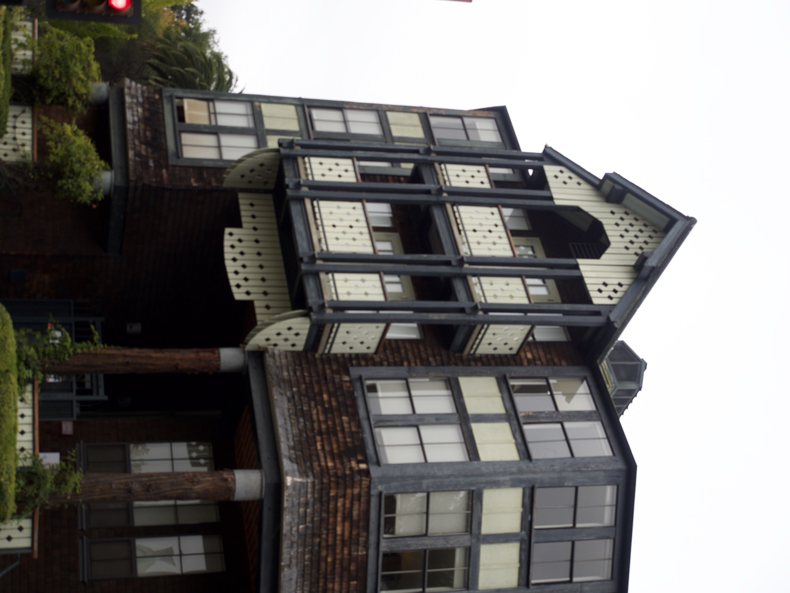
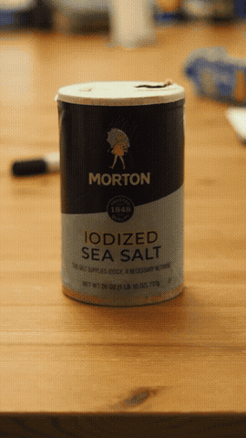

Camera: Olympus OM-D E-M10 Mark II · Lens: Olympus M.Zuiko Digital ED 12–40mm f/2.8 PRO
Part 1: Focal Length and Selfies
In this part I photographed the subject (myself) twice: once up close, and once from several feet away using optical zoom to match the framing. The first shot exaggerates facial features due to wide-angle perspective distortion, while the second produces a more natural look.

Why does this happen?
When photographing close with a wide lens, the center of projection is near the subject, making parts closer to the camera appear disproportionately large. Moving farther away and zooming in keeps the angle of view similar but places the center of projection much farther from the subject, dramatically reducing the relative size difference between foreground and background features.
Part 2: Perspective Compression
Here I chose a building facade and first zoomed in from far away, then walked up close and re-framed without zoom to approximate the same composition. The zoomed shot shows strong perspective compression, as the facade appears flattened and parallel lines look nearly parallel. The close-up shot reveals slightly stronger convergence.


Analysis
Telephoto lenses (or heavy zoom) compress depth because the angular difference between near and far objects shrinks as distance increases. The converging lines and relative size of windows of a building are all reduced, making the facade look like a flat graphic. Shooting close with a wide angle reverses this: depth cues, like facade lines, are greatly amplified.
Part 3: Dolly Zoom
To recreate the Vertigo/dolly zoom effect, I kept a foreground subject (AKA table salt) framed at roughly the same size while moving forward, and zooming out and manual focusing simultaneously. The subject stays constant in frame while the background objects dramatically changed in apparent scale.

How it works
As I moved forward, the center of projection approached the scene. Zooming out simultaneously compensated so the subject's angular size stayed fixed. However, background objects, being farther away, shrank relative to the subject because the background's physical distance barely changed, relative to the zoom factor, so the zoom-out dominates and the background appears to recede.